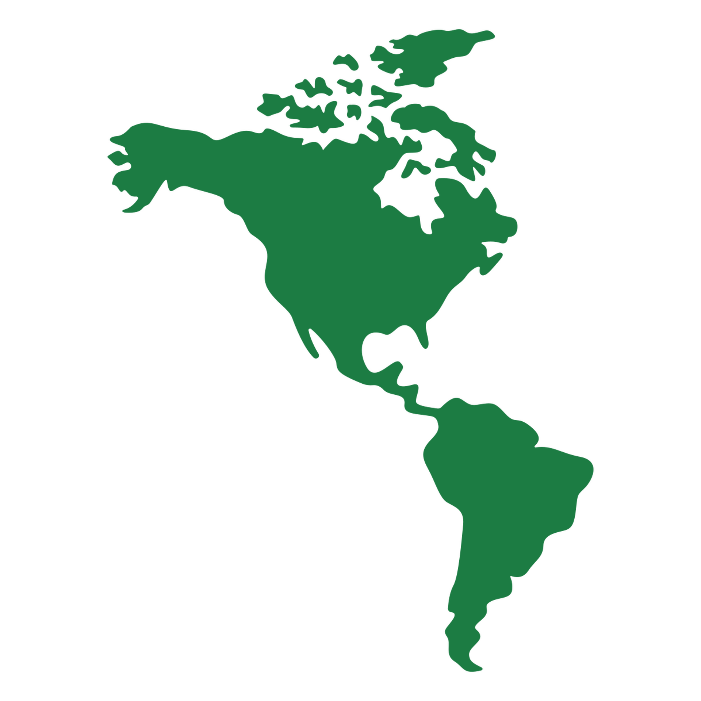

El continente americano es una región geográfica que comprende tanto América del Norte como Centroamérica y América del Sur.
América del Norte incluye países como Estados Unidos, Canadá y México; Centroamérica incluye países como Guatemala, Honduras, El Salvador y Nicaragua; mientras que América del Sur abarca naciones como Brasil, Peru, Argentina, Venezuela y Colombia.
El continente americano es conocido por su diversidad cultural, geográfica y climática .